17. Utilisation du SGBD PostgreSQL
Le SGBD PostgreSQL est librement disponible. Il est une alternative à la version 'community' de MySQL.
Nous l'utilisons ici pour montrer qu'il est assez simple de migrer des scripts Python / MySQL vers des scripts Python / PostgreSQL.
Avec le SGBD MySQL, l'architecture de nos scripts était la suivante :
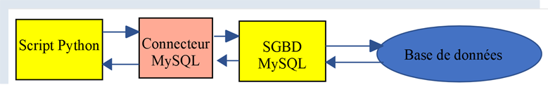
Avec le SGBD PostgreSQL, elle sera la suivante :
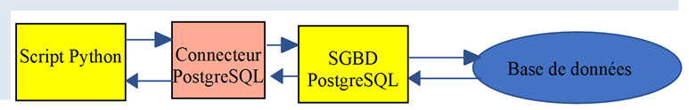
17.1. Installation du SGBD PostgreSQL
Les distributions du SGBD PostgreSQL sont disponibles à l’URL [https://www.postgresql.org/download/] (mai 2019). Nous montrons l’installation de la version pour Windows 64 bits :
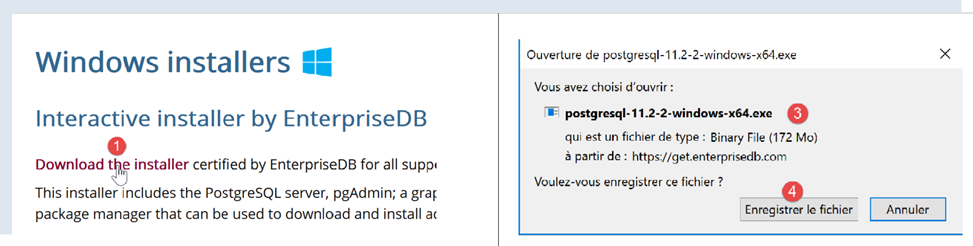
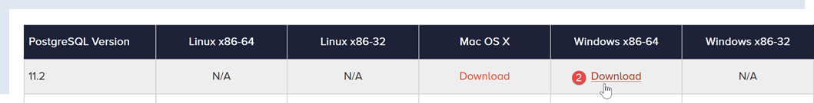
- en [1-4], on télécharge l’installateur du SGBD ;
On lance l’installateur téléchargé :
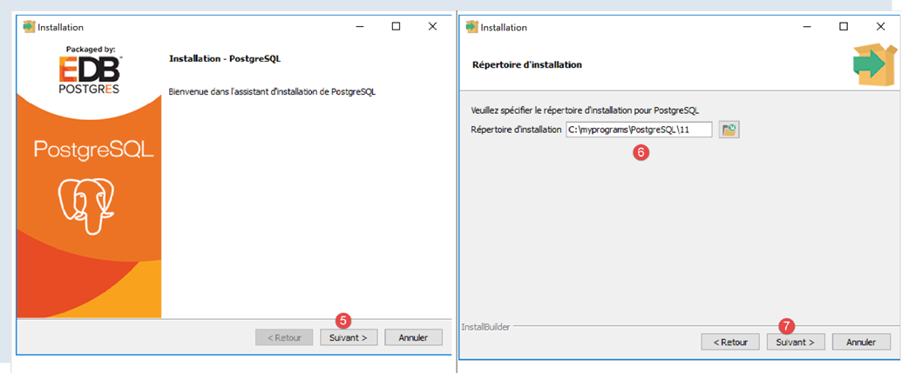
- en [6], indiquez un dossier d’installation ;
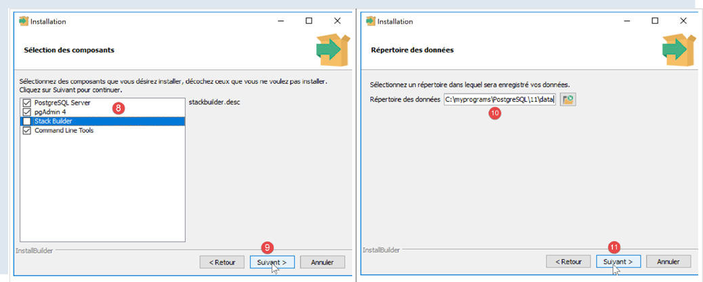
- en [8], l’option [Stack Builder] est inutile pour ce qu’on veut faire ici ;
- en [10], laissez la valeur qui vous sera présentée ;
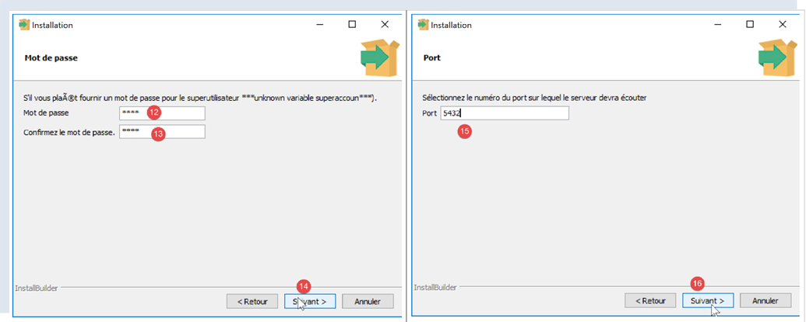
- en [12-13], on a mis ici le mot de passe [root]. Ce sera le mot de passe de l’administrateur du SGBD qui s’appelle [postgres]. PostgreSQL l’appelle également le super-utilisateur ;
- en [15], laissez la valeur par défaut : c’est le port d’écoute du SGBD ;
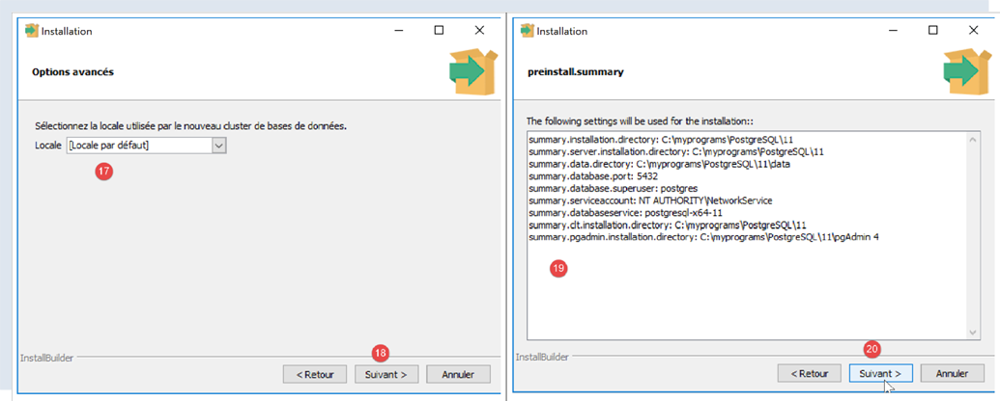
- en [17], laissez la valeur par défaut ;
- en [19], le résumé de la configuration de l’installation ;
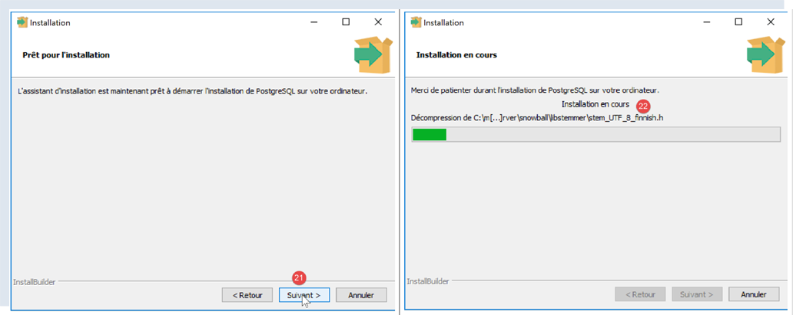
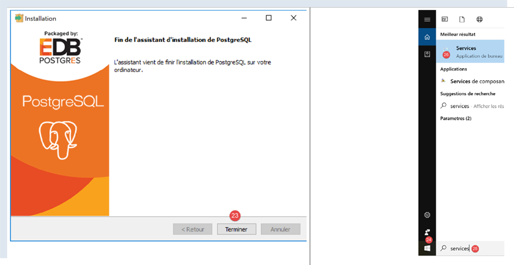
Sous windows, le SGBD PostgreSQL est installé comme un service windows lancé automatiquement. La plupart du temps ce n’est pas souhaitable. Nous allons modifier cette configuration. Tapez [services] dans la barre de recherche de Windows [24-26] :
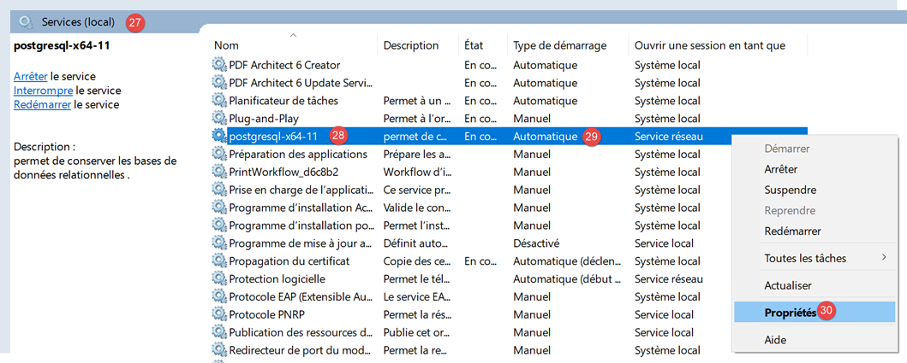
- en [29], on voit que le service du SGBD PostgreSQL est en mode automatique. On change cela en accédant aux propriétés du service [30] :
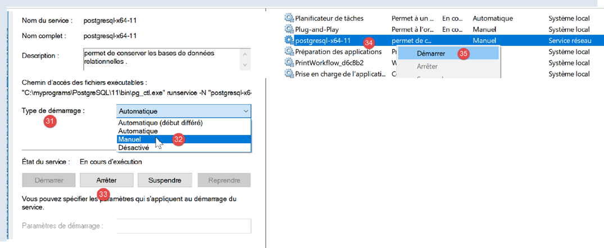
- en [31-32], mettez le démarrage en mode manuel ;
- en [33], arrêtez le service ;
Lorsque vous voudrez démarrer manuellement le SGBD, revenez à l’application [services], cliquez droit sur le service [postgresql] (34) et lancez le (35).
17.2. Administrer PostgreSQL avec l’outil [pgAdmin]
Lancez le service windows du SGBD PostgreSQL (paragraphe précédent). Puis de la même façon que vous avez lancé l’outil [services], lancez l’outil [pgadmin] qui permet d’administrer le SGBD PostgreSQL [1-3] :
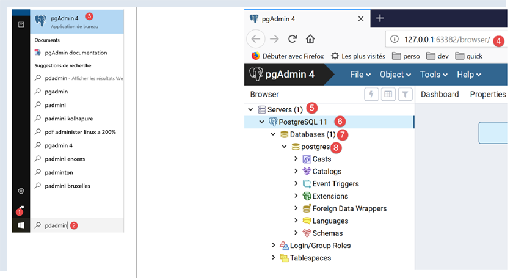
Il est possible qu’à un moment donné on vous demande le mot de passe du super-utilisateur. Celui-ci s’appelle [postgres]. Vous avez défini son mot de passe lors de l’installation du SGBD. Dans ce document, nous avons donné le mot de passe [root] au super-utilisateur lors de l’installation.
- en [4], [pgAdmin] est une application web ;
- en [5], la liste des serveurs PostgreSQL détectés par [pgAdmin], ici 1 ;
- en [6], le serveur PostgreSQL que nous avons lancé ;
- en [7], les bases de données du SGBD, ici 1 ;
- en [8], la base [postgresql] est gérée par le super-utilisateur [postgres] ;
Créons tout d’abord un utilisateur [admpersonnes] avec le mot de passe [nobody] :
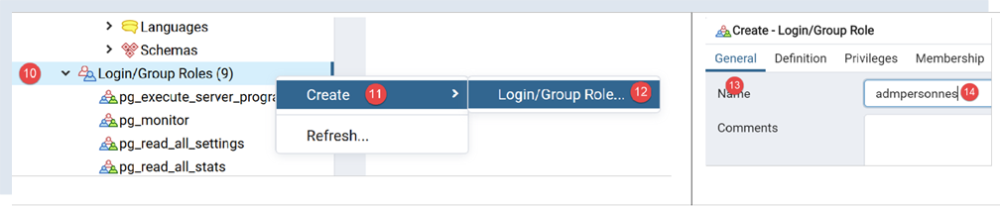
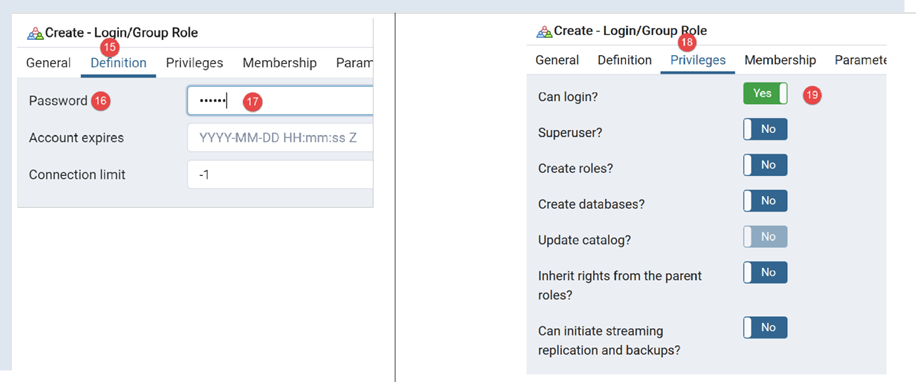
- en [17], on a mis [nobody] ;
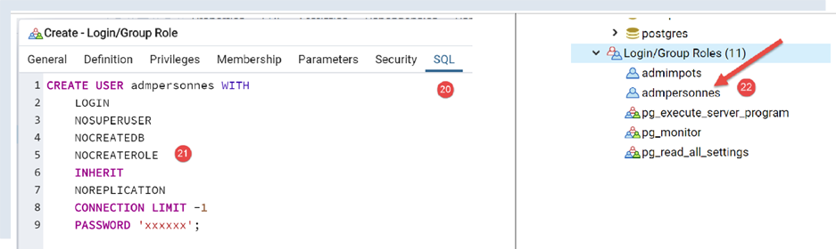
- en [21], le code SQL que va émettre l’outil [pgAdmin] vers le SGBD PostgreSQL. C’est une façon d’apprendre le langage SQL propriétaire de PostgreSQL ;
- en [22], après validation de l’assistant [Save], l’utilisateur [admpersonnes] a été créé ;
Maintenant nous créons la base [dbpersonnes] :
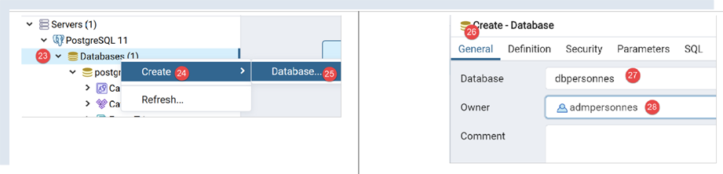
On clique droit sur [23], puis [24-25] pour créer une nouvelle base de données. Dans l’onglet [26], on définit le nom de la base [27] et son propriétaire [admpersonnes] [28].
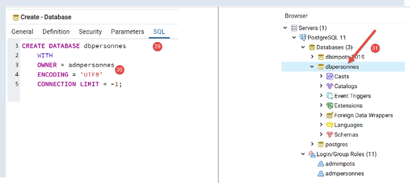
- en [30], le code SQL de création de la base ;
- en [31], après validation de l’assistant [Save], la base [dbpersonnes] est créée ;
Nous allons exploiter la base [dbpersonnes] avec des scripts Python.
17.3. Installation du connecteur Python du SGBD PostgreSQL
Dans le schéma ci-dessus est représenté un connecteur faisant le lien entre les scripts Python et le SGBD PostgreSQL. Il en existe plusieurs. Nous installons le connecteur [psycopg2]. Cela se fait dans un terminal Python (peu importe le dossier dans lequel est ouvert ce terminal). Le connecteur est installé par la commande [pip install psycopg2] :
| (venv) C:\Data\st-2020\dev\python\cours-2020\python3-flask-2020\troiscouches\v01\tests>pip install psycopg2
Collecting psycopg2
Downloading psycopg2-2.8.5-cp38-cp38-win_amd64.whl (1.1 MB)
|| 1.1 MB 3.2 MB/s
Installing collected packages: psycopg2
Successfully installed psycopg2-2.8.5
|
17.4. Portage des scripts MySQL vers des scripts PostgreSQL
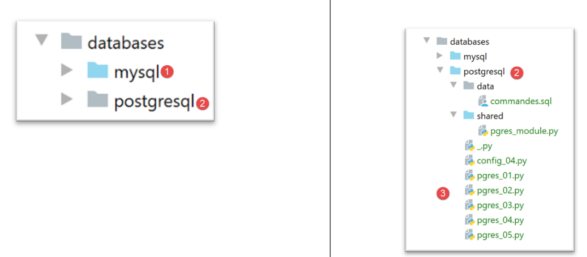
- le dossier [1] des scripts MySQL est dupliqué (Ctrl-C / Ctrl-V), puis les noms des fichiers sont changés mais par leur contenu ;
17.4.1. module [pgres_module]
Ce module est la copie du module [mysql_module] (cf paragraphe |script [mysql-04] : exécution d'un fichier d'ordres SQL|). On change les imports :
Au lieu de :
| # imports
from mysql.connector import DatabaseError, InterfaceError
from mysql.connector.connection import MySQLConnection
from mysql.connector.cursor import MySQLCursor
|
on écrit :
| # imports
from psycopg2 import DatabaseError, InterfaceError
from psycopg2.extensions import connection, cursor
|
La signature de la fonction [afficher_infos] était :
| def afficher_infos(curseur: MySQLCursor):
|
Elle devient :
| def afficher_infos(curseur: cursor)
|
La signature de la fonction [execute_list_of_commands] était :
| def execute_list_of_commands(connexion: MySQLConnection, sql_commands: list,
suivi: bool = False, arrêt: bool = True, with_transaction: bool = True)
|
Elle devient :
| def execute_list_of_commands(connexion: connection, sql_commands: list,
suivi: bool = False, arrêt: bool = True, with_transaction: bool = True):
|
Sinon rien d’autre ne change.
17.4.2. script [pgres_01]
Le script [pgres_01] est la copie du script [mysql_01] (cf paragraphe |script [mysql-01] : connexion à une base MySQL - 1|). On y fait les modifications suivantes :
Au lieu de :
| # import du module mysql.connector
from mysql.connector import connect, DatabaseError, InterfaceError
|
on écrit :
| # import du module psycopg2
from psycopg2 import connect, DatabaseError, InterfaceError
|
Le reste ne change pas. Les résultats sont les mêmes qu'avec MySQL.
17.4.3. script [pgres_02]
Le script [pgres_02] est la copie du script [mysql_02] (cf paragraphe |script [mysql-02] : connexion à une base MySQL - 2|). On y fait les modifications suivantes :
Au lieu de :
| # import du module mysql.connector
from mysql.connector import DatabaseError, InterfaceError, connect
|
on écrit :
| # import du module psycopg2
from psycopg2 import DatabaseError, InterfaceError, connect
|
Les résultats ne sont pas les mêmes que ceux du script [mysql_02] :
| C:\Data\st-2020\dev\python\cours-2020\python3-flask-2020\venv\Scripts\python.exe C:/Data/st-2020/dev/python/cours-2020/python3-flask-2020/databases/postgresql/pgres_02.py
Connexion MySQL réussie à la base database=dbpersonnes, host=localhost sous l'identité user=admpersonnes, passwd=nobody
Déconnexion MySQL réussie
Process finished with exit code 0
|
Le script [pgres_02] est le suivant :
| # import du module mysql.connector
from psycopg2 import DatabaseError, InterfaceError, connect
# ---------------------------------------------------------------------------------
def connexion(host: str, database: str, login: str, pwd: str):
# connecte puis déconnecte (login,pwd) de la base [database] du serveur [host]
# lance l'exception DatabaseError si problème
connexion = None
try:
# connexion
connexion = connect(host=host, user=login, password=pwd, database=database)
print(
f"Connexion réussie à la base database={database}, host={host} sous l'identité user={login}, passwd={pwd}")
finally:
# on ferme la connexion si elle a été ouverte
if connexion:
connexion.close()
print("Déconnexion réussie\n")
# ---------------------------------------------- main
# identifiants de la connexion
USER = "admpersonnes"
PASSWD = "nobody"
HOST = "localhost"
DATABASE = "dbpersonnes"
# connexion d'un utilisateur existant
try:
connexion(host=HOST, login=USER, pwd=PASSWD, database=DATABASE)
except (InterfaceError, DatabaseError) as erreur:
# on affiche l'erreur
print(erreur)
# connexion d'un utilisateur inexistant
try:
connexion(host=HOST, login="xx", pwd="yy", database=DATABASE)
except (InterfaceError, DatabaseError) as erreur:
# on affiche l'erreur
print(erreur)
|
Alors que les lignes 36-41 auraient dû afficher un message d'erreur indiquant que la connexion au SGBD avait échoué, rien n'est affiché. En fait lorsqu'on creuse la question, on voit qu'on passe bien dans le [except] des lignes 35-37 mais que la variable [erreur] vaut [None]. Ceci avec la versions 2.8.4 du connecteur [psycopg2].
On peut contourner ce problème en écrivant un message générique mais moins précis :
| # connexion d'un utilisateur inexistant
try:
connexion(host=HOST, login="xx", pwd="yy", database=DATABASE)
except (InterfaceError, DatabaseError) as erreur:
# on affiche l'erreur
print(f"Erreur de connexion à la base [{DATABASE}] par l'utilisateur [xx/yy]")
|
Les résultats sont alors les suivants :
| C:\Data\st-2020\dev\python\cours-2020\python3-flask-2020\venv\Scripts\python.exe C:/Data/st-2020/dev/python/cours-2020/python3-flask-2020/databases/postgresql/pgres_02.py
Connexion réussie à la base database=dbpersonnes, host=localhost sous l'identité user=admpersonnes, passwd=nobody
Déconnexion réussie
Erreur de connexion à la base [dbpersonnes] par l'utilisateur [xx/yy]
Process finished with exit code 0
|
17.4.4. script [pgres_03]
Le script [pgres_03] est la copie du script [mysql_03] (cf paragraphe |script [mysql-03] : création d'une table MySQL|). On y fait les modifications suivantes :
Au lieu de :
| from mysql.connector import DatabaseError, InterfaceError, connect
from mysql.connector.connection import MySQLConnection
|
on écrit :
| from psycopg2 import DatabaseError, InterfaceError, connect
from psycopg2.extensions import connection
|
Par ailleurs, la signature de la fonction [execute_sql] qui était :
| def execute_sql(connexion: MySQLConnection, update: str):
|
devient :
| def execute_sql(connexion: connection, update: str):
|
Le reste ne change pas. Le résultat est le suivant :
| C:\Data\st-2020\dev\python\cours-2020\python3-flask-2020\venv\Scripts\python.exe C:/Data/st-2020/dev/python/cours-2020/python3-flask-2020/databases/postgresql/pgres_03.py
create table personnes (id int PRIMARY KEY, prenom varchar(30) NOT NULL, nom varchar(30) NOT NULL, age integer NOT NULL, unique(nom,prenom)) : requête réussie
Process finished with exit code 0
|
On peut vérifier la présence de la table [personnes] avec l'outil d'administration [pgAdmin] :
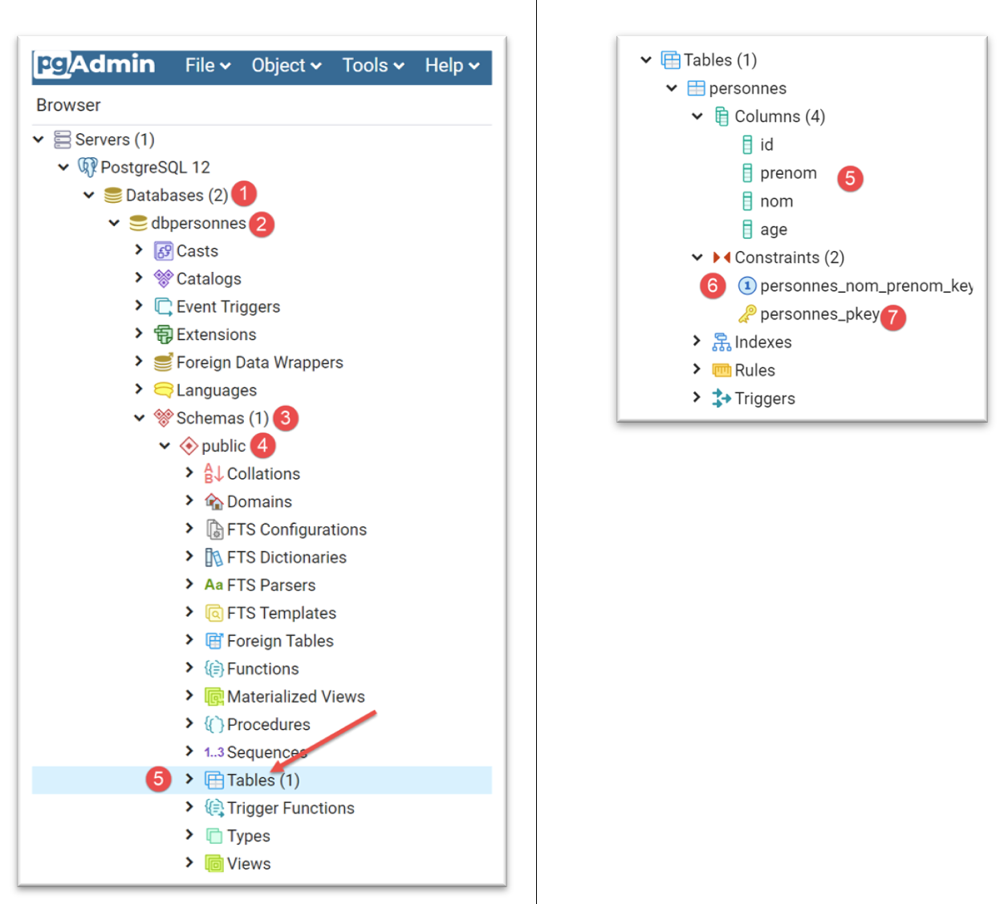
17.4.5. script [pgres_04]
Le script [pgres_04] est une copie du script [mysql_04] (cf paragraphe |script [mysql-04] : exécution d'un fichier d'ordres SQL|). Il utilise le module [pgres_module] :
| # on récupère la configuration de l'application
import config_04
config = config_04.configure()
# le syspath est configuré - on peut faire les imports
import sys
from pgres_module import execute_file_of_commands
from psycopg2 import connect, DatabaseError, InterfaceError
|
Le reste ne change pas.
On crée une configuration [pgres pgres-04 without_transaction] comme il a été fait au paragraphe |script [mysql-04] : exécution d'un fichier d'ordres SQL|. On crée de même une configuration [pgres pgres-04 with_transaction].
L'exécution de la configuration [pgres pgres-04 without_transaction] donne les résultats suivants :
| C:\Data\st-2020\dev\python\cours-2020\python3-flask-2020\venv\Scripts\python.exe C:/Data/st-2020/dev/python/cours-2020/python3-flask-2020/databases/postgresql/pgres_04.py false
--------------------------------------------------------------------
Exécution du fichier SQL C:\Data\st-2020\dev\python\cours-2020\python3-flask-2020\databases\postgresql/data/commandes.sql sans transaction
--------------------------------------------------------------------
[drop table if exists personnes] : Exécution réussie
nombre de lignes modifiées : -1
[create table personnes (id int primary key, prenom varchar(30) not null, nom varchar(30) not null, age integer not null, unique (nom,prenom))] : Exécution réussie
nombre de lignes modifiées : -1
[insert into personnes(id, prenom, nom, age) values(1, 'Paul','Langevin',48)] : Exécution réussie
nombre de lignes modifiées : 1
[insert into personnes(id, prenom, nom, age) values (2, 'Sylvie','Lefur',70)] : Exécution réussie
nombre de lignes modifiées : 1
[select prenom, nom, age from personnes] : Exécution réussie
prenom, nom, age,
*****************
('Paul', 'Langevin', 48)
('Sylvie', 'Lefur', 70)
*****************
xx : Erreur (ERREUR: erreur de syntaxe sur ou près de « xx »
LINE 1: xx
^
)
[insert into personnes(id, prenom, nom, age) values (3, 'Pierre','Nicazou',35)] : Exécution réussie
nombre de lignes modifiées : 1
[insert into personnes(id, prenom, nom, age) values (4, 'Geraldine','Colou',26)] : Exécution réussie
nombre de lignes modifiées : 1
[insert into personnes(id, prenom, nom, age) values (5, 'Paulette','Girond',56)] : Exécution réussie
nombre de lignes modifiées : 1
[select prenom, nom, age from personnes] : Exécution réussie
prenom, nom, age,
*****************
('Paul', 'Langevin', 48)
('Sylvie', 'Lefur', 70)
('Pierre', 'Nicazou', 35)
('Geraldine', 'Colou', 26)
('Paulette', 'Girond', 56)
*****************
[select nom,prenom from personnes order by nom asc, prenom desc] : Exécution réussie
nom, prenom,
************
('Colou', 'Geraldine')
('Girond', 'Paulette')
('Langevin', 'Paul')
('Lefur', 'Sylvie')
('Nicazou', 'Pierre')
************
[select nom,prenom,age from personnes where age between 20 and 40 order by age desc, nom asc, prenom asc] : Exécution réussie
nom, prenom, age,
*****************
('Nicazou', 'Pierre', 35)
('Colou', 'Geraldine', 26)
*****************
[insert into personnes(id, prenom, nom, age) values(6, 'Josette','Bruneau',46)] : Exécution réussie
nombre de lignes modifiées : 1
[update personnes set age=47 where nom='Bruneau'] : Exécution réussie
nombre de lignes modifiées : 1
[select nom,prenom,age from personnes where nom='Bruneau'] : Exécution réussie
nom, prenom, age,
*****************
('Bruneau', 'Josette', 47)
*****************
[delete from personnes where nom='Bruneau'] : Exécution réussie
nombre de lignes modifiées : 1
[select nom,prenom,age from personnes where nom='Bruneau'] : Exécution réussie
nom, prenom, age,
*****************
*****************
--------------------------------------------------------------------
Exécution terminée
--------------------------------------------------------------------
Il y a eu 1 erreur(s)
xx : Erreur (ERREUR: erreur de syntaxe sur ou près de « xx »
LINE 1: xx
^
)
Process finished with exit code 0
|
- ligne 5 : on a dû modifier la commande de suppression de la table [personnes]. Contrairement au connecteur de MySQL le connecteur de PostgreSQL lance une exception si la table à supprimer n’existe pas. La commande [drop table] a une variante [drop table if exists] qui ne lance pas d’exception si la table n’existe pas. Nous l’avons utilisée ici. C’est un exemple où deux SGBD ne se comportent pas de la même façon dans des situations analogues ;
La table [personnes] dans l'outil [pgAdmin] est la suivante :
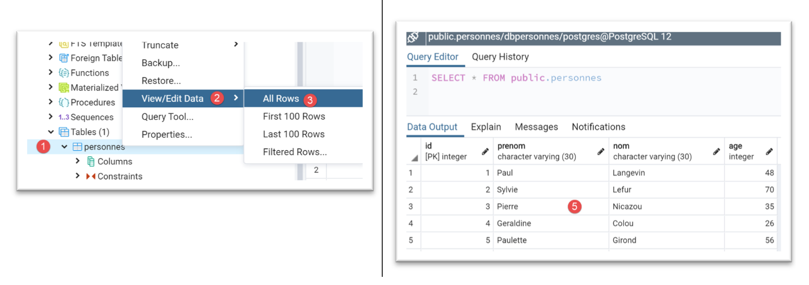
L'exécution de la configuration [pgres pgres_04 with_transaction] donne les résultats suivants :
| C:\Data\st-2020\dev\python\cours-2020\python3-flask-2020\venv\Scripts\python.exe C:/Data/st-2020/dev/python/cours-2020/python3-flask-2020/databases/postgresql/pgres_04.py true
--------------------------------------------------------------------
Exécution du fichier SQL C:\Data\st-2020\dev\python\cours-2020\python3-flask-2020\databases\postgresql/data/commandes.sql avec transaction
--------------------------------------------------------------------
[drop table if exists personnes] : Exécution réussie
nombre de lignes modifiées : -1
[create table personnes (id int primary key, prenom varchar(30) not null, nom varchar(30) not null, age integer not null, unique (nom,prenom))] : Exécution réussie
nombre de lignes modifiées : -1
[insert into personnes(id, prenom, nom, age) values(1, 'Paul','Langevin',48)] : Exécution réussie
nombre de lignes modifiées : 1
[insert into personnes(id, prenom, nom, age) values (2, 'Sylvie','Lefur',70)] : Exécution réussie
nombre de lignes modifiées : 1
[select prenom, nom, age from personnes] : Exécution réussie
prenom, nom, age,
*****************
('Paul', 'Langevin', 48)
('Sylvie', 'Lefur', 70)
*****************
xx : Erreur (ERREUR: erreur de syntaxe sur ou près de « xx »
LINE 1: xx
^
)
--------------------------------------------------------------------
Exécution terminée
--------------------------------------------------------------------
Il y a eu 1 erreur(s)
xx : Erreur (ERREUR: erreur de syntaxe sur ou près de « xx »
LINE 1: xx
^
)
Process finished with exit code 0
|
La table [personnes] dans l'outil [pgAdmin] est la suivante :
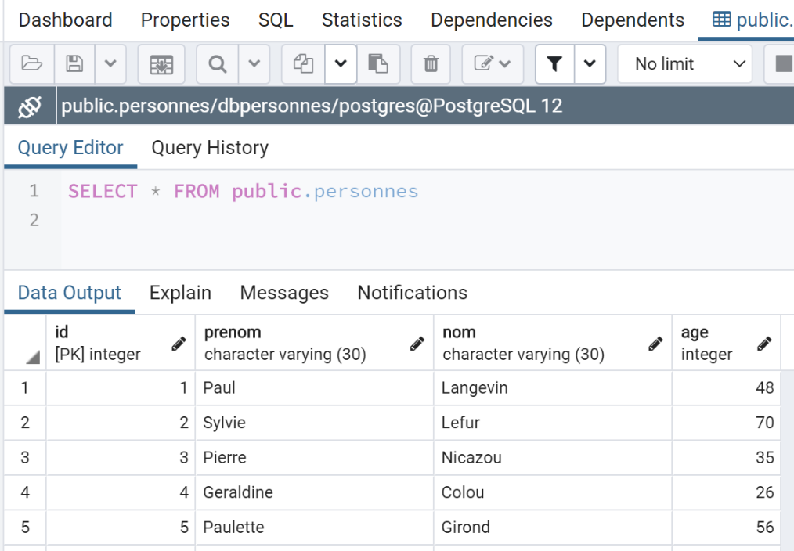
Ici, le résultat est différent de celui obtenu avec MySQL. Si on exécute les scripts dans les mêmes conditions, ç-à-d après exécution du script sans transaction, on a les résultats suivants :
- avec MySQL, la table [personnes] est vide ;
-
avec PostgreSQL, la table [personnes] ne l'est pas ;
La différence repose sur les façons différentes qu'ont ces deux SGBD de défaire la transaction :
-
MySQL ne défait pas les ordres [drop table] et [create table]. On se retrouve avec une table [personnes] vide ;
- PostgreSQL défait les ordres [drop table] et [create table]. On retrouve la table dans l'état où elle était avant l'exécution du script avec transaction ;
17.4.6. script [pgres_05]
Le script [pgres_05] est une copie du script [mysql_05] (cf paragraphe |script [mysql-05] : utilisation de requêtes paramétrées|). Le script est modifié de la façon suivante :
Au lieu de :
| # imports
from mysql.connector import connect, DatabaseError, InterfaceError
|
on écrit :
| # imports
from psycopg2 import connect, DatabaseError, InterfaceError
|
Le reste ne change pas.
Les résultats obtenus dans [pgAdmin] sont les suivants :
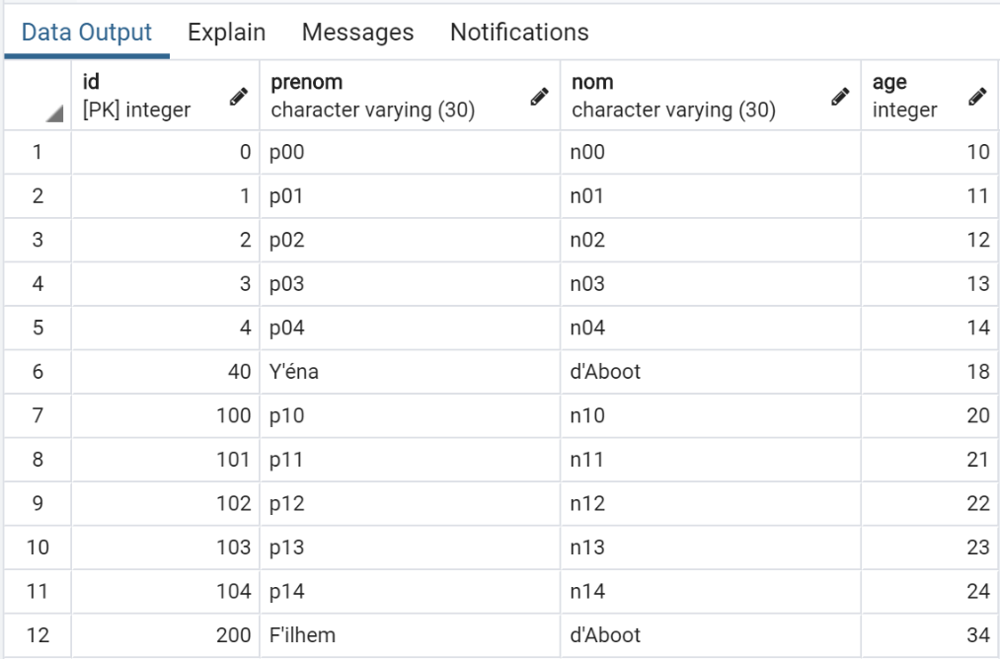
17.5. Conclusion
Le portage des scripts MySQL vers des scripts PostgreSQL s'est réalisé plutôt facilement. C'est une exception. Les deux SGBD ne supportent pas les mêmes règles de nommage des objets SQL (bases, tables, colonnes, contraintes, types des données…), ont des extensions SQL incompatibles… Pour assurer un portage simple, il faut s'en tenir dans les deux cas à la norme SQL sans essayer d'utiliser les extensions propriétaires des SGBD. Cela se fait alors aux dépens des performances.